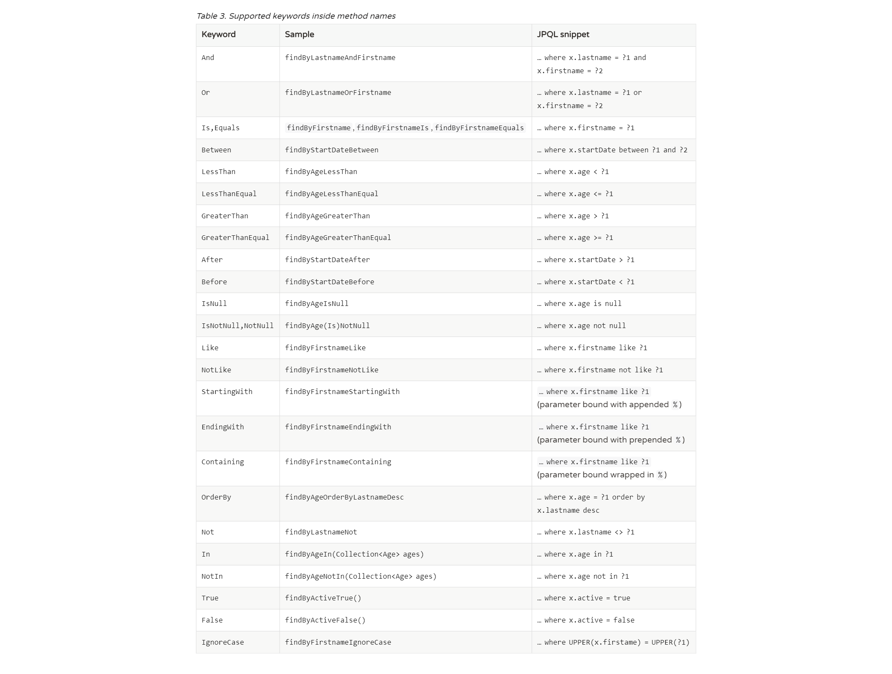

通过解析方法名创建查询
在前面的例子中提到可以在 Repository 中定义新的方法，例如 deleteByName，JPA 会根据方法中的属性名称自动完成对应的数据库访问。
JPA 创建查询时基于以下的方法命名规则：

使用 @NamedQuery 注解
首先在 Entity 实体类上添加一个 @NamedQuery 注解：
@NamedQuery(name = "findByEmail", query = "SELECT u FROM User u WHERE u.email = :email") |
通过 EntityManager 来使用命名查询：
|
使用 @Query 注解
@Query 注解的使用非常简单，只需在声明的方法上面标注该注解，同时提供一个 JP QL 查询语句即可。
public interface UserRepository extends JpaRepository<User, Integer> { |
创建查询的顺序
Spring Data JPA 在为接口创建代理对象时，如果发现同时存在多种上述情况可用，它该优先采用哪种策略呢？ JPA 提供了 query-lookup-strategy 属性，用以指定查找的顺序。它有如下三个取值：
- create： 通过解析方法名字来创建查询。即使有符合的命名查询，或者方法通过 @Query 指定的查询语句，都将会被忽略。
- create-if-not-found： 如果方法通过 @Query 指定了查询语句，则使用该语句实现查询；如果没有，则查找是否定义了符合条件的命名查询，如果找到，则使用该命名查询；如果两者都没有找到，则通过解析方法名字来创建查询。这是 query-lookup-strategy 属性的默认值。
- use-declared-query： 如果方法通过 @Query 指定了查询语句，则使用该语句实现查询；如果没有，则查找是否定义了符合条件的命名查询，如果找到，则使用该命名查询；如果两者都没有找到，则抛出异常。
query-lookup-strategy 属性在 EnableJpaRepositories 中进行配置，例如：
@EnableJpaRepositories(queryLookupStrategy = QueryLookupStrategy.Key.CREATE) |